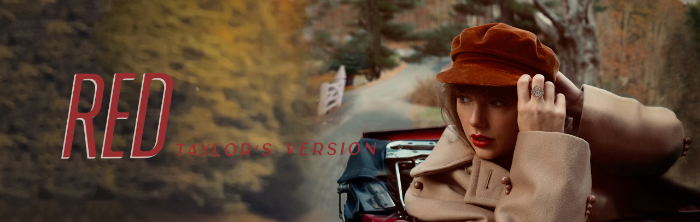

由于陷入与大机器唱片公司的版权纠纷，泰勒·斯威夫特于2019年宣布重新录制她在大机器唱片公司下发行的六张个人录音室专辑，来拿回自己的
创作作品，其中包括《Red》。之后她的专辑版权再次易手，归三叶草控股公司所有，泰勒·斯威夫特还是决定重新录制她的旧专辑，从而夺回版权。
在重录这张专辑的过程中，她走进录音室尝试与不同的伙伴接触，感觉像是尝试组织新生活一样，有成千上万的声音凝聚在一起，热情地向她唱出歌词。
同时她也表示，可能随着时间流逝，录制专辑的过程中她感觉有些伤痕被疗愈了
泰勒·斯威夫特邀请了艾德·希兰和克里斯·斯台普顿等人参与专辑内曲目的录制。她录制了原版专辑中的所有歌曲和10首未发行的歌曲。
此外，她还将原始版的《All Too Well》收录在内。该曲的灵感来源于她和杰克·吉伦哈尔的恋情，创作该曲时她感到很为难，花了很长的时间来梳理
内容，创作出长达10分钟的歌曲，不适合收入专辑。此次重录专辑，她决定将这一版本发行出来 。专辑还收录了歌曲《Run》，该曲是她与艾德·希兰
初识创作出的作品。在封面上，泰勒·斯威夫特戴着一顶酒红色的帽子，穿着一件米色的厚呢大衣，坐在停放在秋天原野上的一辆车上 。
State of Grace (Taylor’s Version)
Red (Taylor’s Version)
Treacherous (Taylor’s Version)
I Knew You Were Trouble (Taylor’s Version)
All Too Well (Taylor’s Version)
22 (Taylor’s Version)
I Almost Do (Taylor’s Version)
We Are Never Ever Getting Back Together (Taylor’s Version)
Stay Stay Stay (Taylor’s Version)
The Last Time (Taylor’s Version)
Holy Ground (Taylor’s Version)
Sad Beautiful Tragic (Taylor’s Version)
The Lucky One (Taylor’s Version)
Everything Has Changed (feat. Ed Sheeran) (Taylor’s Version)
Starlight (Taylor’s Version)
Begin Again (Taylor’s Version)
The Moment I Knew (Taylor’s Version)
Come Back…Be Here (Taylor’s Version)
Girl at Home (Taylor’s Version)
State of Grace (Acoustic Version) (Taylor’s Version)
Ronan (Taylor’s Version)
Better Man (Taylor’s Version) (From the Vault)
Nothing New (feat. Phoebe Bridgers) (Taylor’s Version) (From the Vault
Babe (Taylor’s Version) (From the Vault)
Message In a Bottle (Taylor’s Version) (From the Vault)
I Bet You Think About Me (feat. Chris Stapleton) (Taylor’s Version) (From the Vault)
Forever Winter (Taylor’s Version) (From the Vault)
Run (feat. Ed Sheeran) (Taylor’s Version) (From the Vault)
The Very First Night (Taylor’s Version) (From the Vault)
All Too Well (10 Minute Version) (Taylor’s Version) (From the Vault)
在《Red (Taylor's Version)》中，泰勒·斯威夫特的想法更加疯狂宏大，更加闪耀深邃。每一首曲子都得到了重新制作，增添了更多独具匠心的思
考与厚度。就像《Fearless (Taylor's Version)》一样，泰勒·斯威夫特愈加纯熟的嗓音和唱功为歌曲增添了不一样的风味和力量，尤其是旋律更加深沉
的《Come Back… Be Here》和《The Moment I Knew》。专辑同名曲带有乡村流行乐风格，经典的鼓和贝斯编织出生机盎然的活力乐章，在激昂的电吉他
中，泰勒·斯威夫特具有辨识度的声线随着节奏的律动而变幻，倾诉着她曾难忘的炽热之爱。
《All Too Well (10 Minute Version)》的歌词没有过多的华丽辞藻，只是对生活剪影的述说：有初恋时平静的甜蜜、热恋期肆意释放的激情，然后
是对情感变质的反思，再到分手后的痛彻心扉，以及最终放下一切之后的释然，她把一段感情的始末巨细靡遗地揉进了整首歌里。《Ronan》是一首表达了
怀念失去之后总要笑对未来的催泪曲 ，比原始的版本更加情绪化，更加富有激情，称得是上一首感动人心的礼赞。她以新的嗓音再次唱响了
《Begin Again》，让听众心里发酸。
《Nothing New》的内容涵盖了年岁增长与渐渐错失所爱而恐惧；《Stay Stay Stay》明明是一首挽留恋人留下的歌曲，但听起来无比甜蜜，仿佛这对
情侣仍在爱恋之中，令人着迷。除此之外，专辑内收录的其他也都各具特点，譬如以清亮木吉他开场，充满着青春自由与张力的《22》、对爱情降临时雀跃
涌动的《I Bet You Think About Me》、以及爱情挽歌《The Last Time》。这张专辑是她对过往音乐生涯的致敬，同时也让听众对她的未来更加期待。
而对于泰勒·斯威夫特来说，属于她的黄金年代才刚刚开始。
| 获奖记录 | |||||||||||
|---|---|---|---|---|---|---|---|---|---|---|---|
| 时间 | 颁奖机构 | 授予奖项 | 获奖作品 | 结果 | |||||||
| 2022 | iHeart电台音乐奖 | 最佳歌词 | 《All Too Well (10 Minute Version)》 | 获奖 | |||||||
| 第57届美国乡村音乐学院奖 | 年度MV | 《I Bet You Think About Me》 | 提名 | ||||||||
| 新音乐快递杂志奖 | 最佳重录专辑 | 专辑《Red (Taylor's Version)》 | 获奖 | ||||||||
| 年度MV | 《All Too Well (10 Minute Version)》 | 提名 | |||||||||
| 公告牌音乐奖 | 最佳乡村音乐专辑 | 专辑《Red (Taylor's Version)》 | 获奖 | ||||||||